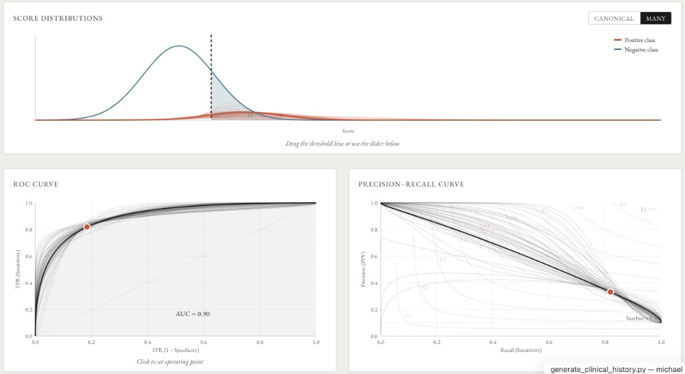
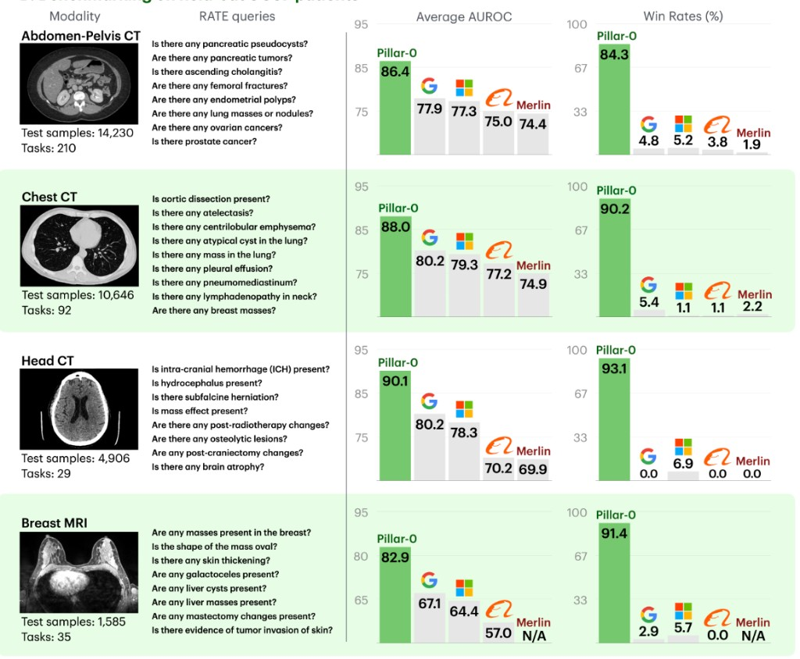

Posts
-

What does "90 AUC" really mean?An interactive exploration of AUC, prevalence, and the metrics that actually matter at deployment.
-
 BRIDGE trial sample size calculator
BRIDGE trial sample size calculatorCalculate sample size for AI clinical trials with BRIDGE-enabled data reuse.
-

Pillar-0: a new frontier for radiology foundation modelsA radiology foundation model pretrained on 155K volumes, with a scalable evaluation framework for 366 clinical findings.